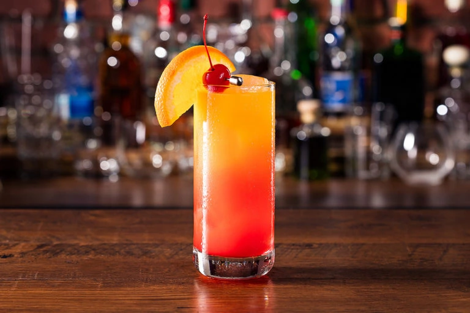

Tequila Sunrise

"Tequila Sunrise: A Cocktail Born Under the Mexican Sun"
In the realm of cocktails, few drinks boast a history as vibrant and sun-soaked as the Tequila Sunrise. Originating in the 1930s, this iconic libation has not only become a staple of the cocktail world but has also embedded itself in popular culture, its radiant hues mirroring the warm glow of its Mexican homeland.

Glass
The Tequila Sunrise is typically served in a highball glass. A highball glass is a tall, slim glass with straight sides, often used for drinks that are served over ice and diluted with a larger proportion of non-alcoholic mixer. This type of glass is suitable for showcasing the vibrant layers of the Tequila Sunrise, especially with its gradient of colors created by the tequila, orange juice, and grenadine.
Ingredients and Instruction
ingredients
- 2 oz (60 ml) Tequila
- 4 oz (120 ml) Orange Juice
- 1/2 oz (15 ml) Grenadine
- Ice cubes
- Orange slice and maraschino cherry for garnish
Instruction
- Fill the glass with ice
- Pour 2 oz (60 ml) Tequila then 4 oz (120 ml) of Orange Juice
- stir the mixture gently
- Now comes the crucial part for the visual appeal. Slowly pour 1/2 oz (15 ml) of grenadine into the glass over the back of a spoon or by drizzling it down the side of the glass. This slow pouring helps the grenadine settle at the bottom before gradually rising to create the sunrise effect.
- DO NOT STIR ANYMORE
- garnish with a orange slice on the side
- serve and enjoy